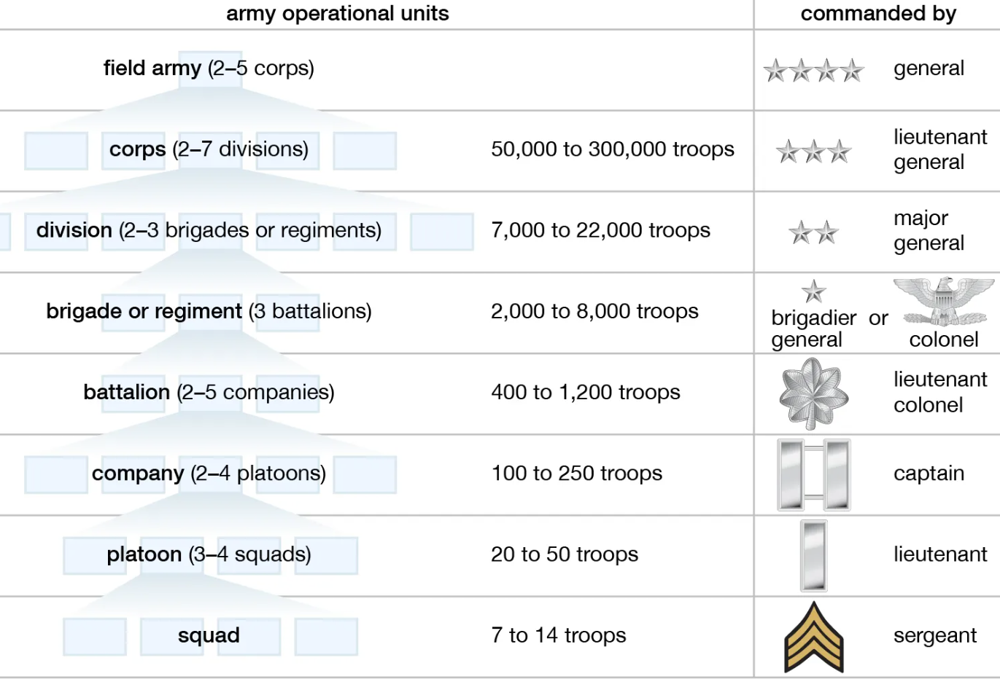
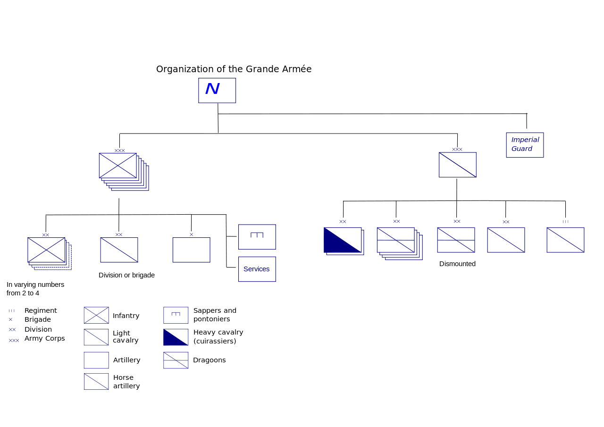
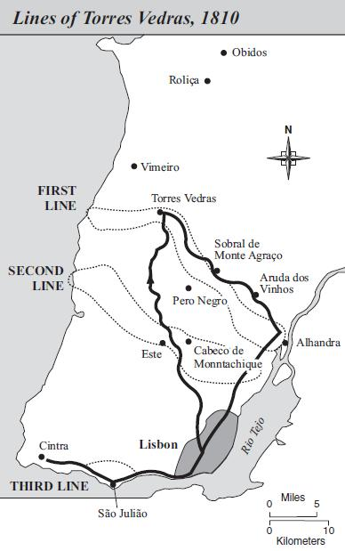
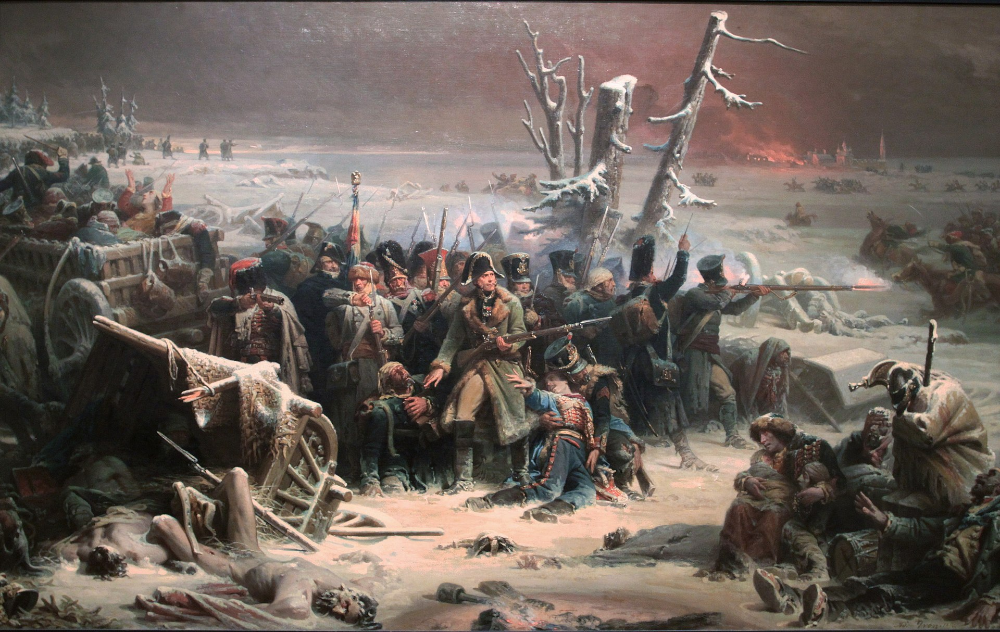
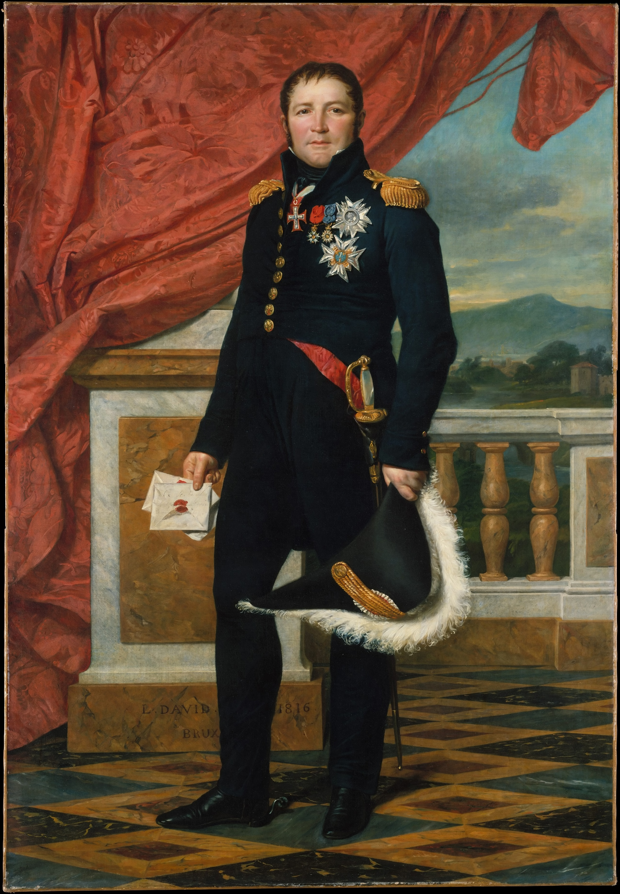

드레스덴을 향하여 (10) - 그의 사전에 원수 두 명은 없다
게시: 2024-02-12T06:30:38+09:00
8월 23일 오후, 드레스덴 남쪽 피르나(Pirna)에 주둔하고 있던 생시르 원수로부터 나폴레옹에게 날아든 급보의 내용은 나름 극적이었습니다. 그랑다르메가 지키고 있지 않던 페터스발트(Peterswald) 고개길을 이용하여 러시아군 군단 하나가 쳐들어왔고 그 뒤로는 오스트리아군이 따르고 있는데, 그 규모는 오스트리아군 전체로 보인다는, 다소 과장된 표현이었습니다. 전에 언급한 것처럼 이때 점심을 먹고 있던 나폴레옹은 들고있던 와인잔을 탁자에 내리치며 깨뜨렸다고 전해지지만, 그렇다고 그가 완전 패닉에 빠진 것은 아니었습니다. 그의 드레스덴 방어 계획은 결코 지타우와 럼부르크, 즉 보헤미아에서 작센으로 들어가는 길목을 철통같이 지킨다는 정적인 것이 아니었거든요. 기본적인 방어는 피르나에 주둔한 생시르의 제14군단이 수행하되, 유사시엔 인근에 배치한 부대들이 지원을 위해 달려가 시간을 끄는 사이 자신이 직접 슐레지엔에서 회군하여 보헤미아 방면군과 결전을 벌인다는 것이었습니다. 그런 원래의 계획에 따라, 그는 생시르에게 자신이 곧 20만 대군을 이끌고 달려가겠다고 답신을 했습니다. 물론 이 20만 대군 운운하는 내용도 생시르의 급보처럼 과장이 섞인 것이었습니다. 당장 나폴레옹이 슐레지엔으로 몰고가던 병력 규모가 17만 정도 규모였는데, 그나마 당장 앞에 블뤼허의 슐레지엔 방면군 10만과 대치하고 있는 상황에서 병력을 모두 빼낼 수는 없었습니다. 그는 이 병력 중 10만 정도를 남겨두고, 나머지 병력만 이끌고 드레스덴으로 갈 생각이었습니다. 그 외에는 지타우에 주둔한 빅토르-포니아토프스키의 병력 4만과 방담의 병력 3만이 있었으니, 이들의 병력을 동원하면 드레스덴 방어는 충분히 가능했습니다. 문제는 병력 수보다는 시간이었습니다. 연합군의 침공이 예상과는 다른 경로를 통과했기 때문에, 까딱하다가는 드레스덴이 함락된 이후에나 구원군이 도착할 판국이었습니다. 따라서 나폴레옹은 쾌속 강행군이 가능한 근위대 등 정예 병력만 이끌고 먼저 달려가야 했습니다. 그렇게 1분 1초가 아까운 시점에서도, 나폴레옹의 두뇌는 블뤼허를 상대하기 위해 남겨두고 갈 병력의 조직을 위해 바쁘게 굴러갔습니다. 이 남겨놓고 가는 부대들의 임무는 공격이 아니라 수비였으므로, 어떻게 생각하면 그냥 아무 군단 몇 개를 찍어서 놓고 가면 되는 것이었습니다. 그러나 실제로는 더 복잡했습니다. 먼저, 이 수비 임무의 부대들은 여러 개의 군단(corps)으로 구성된 하나의 방면군(armée)이었습니다. 그런데, 나폴레옹이 자신이 직접 지휘하는 것 이외에 하나의 방면군을 조직하여 부하에게 맡기는 일이 그렇게 많지는 않았습니다. 그리고 그렇게 맡겨놓은 방면군은 대부분 좋지 않은 결과를 낳았습니다.

(미육군 조직도입니다. 맨 위에 군(army)부터 시작하여 군단, 사단, 여단/연대, 대대, 중대 등으로 내려갑니다. 요즘은 사단 밑에 여단이 있는 것이 아니라 좀 작은 특별 부대는 사단이 아니라 여단으로 독립적으로 운용하는 경우가 많은 것 같습니다. Corps라는 단어를 콥스가 아니라 코어로 읽는다는 것에서 눈치 채셨겠지만, 군단이니 연대니 하는 저런 부대의 영어 편제명은 모두 프랑스어에서 나온 것입니다. Lieutenant나 Sergeant처럼 스펠링과 발음이 어려운 것은 다 프랑스어에서 온 것이라고 보시면 됩니다. 독특하게 대대까지는 모두 프랑스어에서 온 것인데, 중대 이하부터는 프랑스어와 좀 다릅니다. 가령 프랑스어에서는 중대를 escadron(에스카드롱), 즉 영어의 squadron에 해당하는 단어로 부르고, 소대는 section(섹시옹), 분대는 équipe(에뀌쁘)라고 부릅니다. 소대의 영어 단어인 platoon도 실은 프랑스어 peloton 에서 유래된 것인데, 이는 '공 모양의 작은 덩어리'를 부르는 단어로서 화승총을 쏘던 부대를 펠로통으로 부르던 것에서 비롯된 것이라고 합니다.)

(나폴레옹의 그랑다르메의 일반적인 편제 구조입니다.) 대표적인 사례가 바로 1810년 포르투갈 침공에 나섰던 포르투갈 방면군(L'armée de Portugal)이었습니다. 당시 약 5만9천 규모였던 포르투갈 방면군의 총사령관으로는 나폴레옹 제국의 2인자인 마세나(André Masséna)를 임명했으므로, 나폴레옹은 그야말로 최고의 카드를 꺼내든 셈이었고, 나폴레옹은 손바닥만한 포르투갈 정복의 성공을 전혀 의심하지 않았습니다. 그러나 그 결과는 처참한 패배였습니다. 그게 꼭 프랑스군의 문제 때문이라고 보기는 어렵습니다. 상대는 대영제국의 모든 자원을 다 지원받은 웰링턴 공작이었고, 웰링턴은 방어자의 이점을 최대한 살리기 위해 무지막지한 재원을 털어넣어 토헤스 베드하스(Torres Vedras) 방어선을 구축해놓았으니까요.

(저 지도에서 점선으로 되어 있는 것이 토헤스 베드하스 방어선입니다. 보시다시피 1차선과 2차선, 최종적으로 3차선까지 준비되어 있었습니다. 마세나는 저 1차선조차도 돌파할 엄두를 내지 못했습니다. 자세한 이야기는 https://nasica1.tistory.com/210를 참조하십시요.) 그러나 프랑스군 측에도 문제는 있었습니다. 당시 포르투갈 방면군에는 레이니에의 제2군단, 네의 제6군단, 쥐노의 제8군단과 함께 몽브렁의 예비기병군단까지 총 4개 군단이 소속되어 있었습니다. 능력도 딸리는데다 성격까지 불안정했지만 1793년 툴롱 포위전 당시 나폴레옹이 아직 대위 계급일 때부터 나폴레옹의 심복 노릇을 했다는 인연 덕분에 군단장이 된 쥐노를 제외하면, 레이니에나 네, 몽브렁 모두 쟁쟁한 실력자들이었습니다. 이런 기라성 같은 인물들이 모였는데 뭐가 문제였을까요? 너무 기라성 같은 인물들이 모였다는 것이 문제였습니다. 특히 네와 마세나의 궁합은 최악이었습니다. 마세나는 나폴레옹의 제1차 이탈리아 원정 때부터 두각을 나타내며 경력면에서도 다른 원수들보다 한차원 더 높은 레벨이라고 할 수 있는 인물이었고, 나폴레옹도 그를 가리켜 자신의 제국에서 제2인자라고 인정한 바가 있었습니다. 다만 그런 초기부터도 약탈과 부정부패, 잔혹함으로 악명을 날려 인성면에서는 그다지 좋지 못한 편이었습니다. 가게 점원 출신이었던 아버지 밑에서 가게 일을 배우다 어린 나이에 상선의 보이가 된 마세나처럼, 네도 통장이로 밥벌이를 하던 서민 집안에서 태어났지만 그래도 수도원에 딸린 학교에서 공부를 하고 하급 서기로 일했던 네는 좀더 합리적이고 공정한 편이었습니다. 네는 처음부터 나폴레옹 밑에서 싸운 사람이 아니었기 때문에 마세나와는 친근한 편이 아니었는데, 그럼에도 불구하고 1804년 프랑스 제국의 초대 원수들이 임명될 때 마세나와 함께 원수의 지휘봉을 받은 18인 중의 한 명으로서 자부심이 강했습니다.

(1812년 러시아에서 후퇴할 때 나폴레옹은 처음에는 다부에게 후위 임무를 맡겼는데, 다부의 활약이 시원치 않자 나폴레옹은 네에게 그 임무를 맡겼습니다. 언듯 생각하면 네는 워털루 전투에서 뻘짓을 한 것 외에는 딱히 기억나는 업적이 없는 것 같지만, 그림 속 1812년 크라스노이(Krasnoi) 전투 때 보여준 용기와 결단력이 그의 모든 것을 말해준다고 생각합니다. 네의 별명은 이 전투 이후 나폴레옹이 직접 붙여준 ' le Brave des braves', 즉 '용감한 자들 중 가장 용감한 자'입니다.) 그런 네를 포악한 성정의 마세나 밑에 배속시켜놓았던 것이 나폴레옹의 실책이었습니다. 네는 자신과 동급이라고 여기던 마세나의 지휘 하에 들어간 것에 매우 심기가 불편했고, 마세나도 그런 심기를 감추지 않는 네를 매우 괘씸하게 여기며 거북해 했습니다. 이 둘의 불협화음 때문에 제3차 포르투갈 침공이 망한 것은 아니지만, 분명히 나쁜 영향을 주기는 했었습니다. 그런 기억 때문에, 나폴레옹은 이후에는 2명의 원수를 하나의 독립적인 방면군에 배치하는 일은 가능한한 피했습니다. 그래서 나폴레옹이 블뤼허를 상대한 보버 방면군(l'armée de la Bober)을 편성할 때, 누구를 사령관으로 임명할지 꽤 고심을 했습니다. 일단 근위대를 제외하고 10만 병력을 편성하려면 병력 수가 많은 제3군단을 반드시 남겨둬야 했는데, 그 제3군단장은 네였습니다. 하지만 분명히 중대 결전이 벌어질 곳은 여기 슐레지엔이 아니라 드레스덴이었고, 네는 드레스덴으로 가야 했습니다. 잠깐이나마 고민을 한 끝에 나폴레옹이 내린 선택은 제11군단장 막도날이었습니다. 그는 제3군단과 제11군단, 그리고 로리스통의 제5군단 및 세바스티아니의 제2기병군단을 묶어 보버 방면군을 편성하고 그 지휘관으로는 막도날을 임명했습니다. 네의 제3군단은 원래부터 규모가 컸기 때문에, 네의 후임으로 제3군단장이 된 수암(Souham) 장군의 부담을 줄여주기 위해 사단 하나를 떼어 제라르(Maurice-Étienne Gérard)가 새로 군단장이 된 제11군단에 붙여주는 세심함까지 발휘했습니다.

(다비드가 그린 제라르의 초상화입니다. 약간 아이러니컬하게도, 이 그림이 완성된 1816년은 부르봉 왕정 복고 시기였고, 백일천하 때 나폴레옹편에 붙어 워털루 전투에도 참전했던 제라르는 당시 벨기에 브뤼셀에 망명 생활을 하고 있었습니다. 나폴레옹보다 4세 연하였던 그는 베르나도트의 참모로 일하다 예나 전투에서 공을 세워 장군이 되었고, 보로디노 전투에도 참전했습니다. 1814년 복위한 부르봉 왕정은 그를 높이 사서 레종도뇌르 훈장도 주고 생루이 기사 작위도 주었지만, 제라르는 나폴레옹이 엘바섬에서 탈출하자 그에게 붙었습니다. 워털루 전투 당시 엉뚱한 곳을 향하던 그루시에게 '대포 소리가 나는 워털루 방향으로 가야 한다'라고 주장한 사람이 바로 제라르였습니다. 그는 나중에 1830년 7월 혁명에도 참여했고 훗날 결국 프랑스 원수가 되었으며, 79세까지 장수하여 나폴레옹 3세가 황제가 되는 것까지 보았습니다.) 이렇게 나폴레옹이 내린 결정, 즉 네를 데려가고 대신 막도날을 10만 대군의 사령관으로 임명한 것은 과연 좋은 선택이었을까요? 그건 불과 며칠 후에 드러나게 됩니다만 그 이야기는 뒤에 보시고, 일단 우리의 시선은 드레스덴으로 향합니다. Source : The Life of Napoleon Bonaparte, by William Milligan Sloane Napoleon and the Struggle for Germany, by Leggiere, Michael V https://fr.wikipedia.org/wiki/Arm%C3%A9e_de_Portugal https://en.wikipedia.org/wiki/Andr%C3%A9_Mass%C3%A9na https://en.wikipedia.org/wiki/Michel_Ney https://en.wikipedia.org/wiki/Grande_Arm%C3%A9e https://www.britannica.com/topic/battalion https://en.wikipedia.org/wiki/Platoon